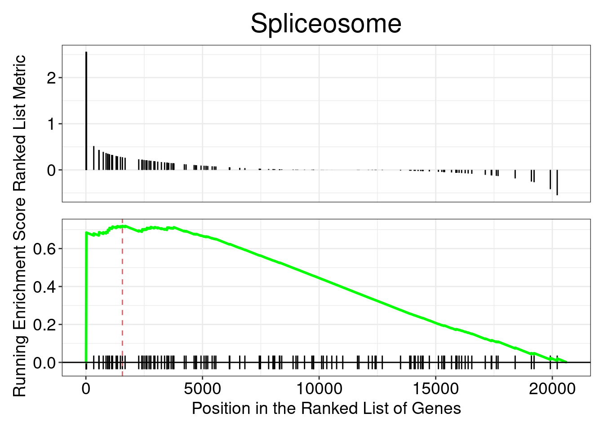

Code
## Remove any NA values (reduces the data by quite a bit) and duplicates
res_entrez <- dplyr::filter(res_ids, entrez != "NA" & duplicated(entrez)==F)You!
December 16, 2024
Approximate time: 30 minutes
Using the log2 fold changes obtained from the differential expression analysis for every gene, gene set enrichment analysis and pathway analysis can be performed using clusterProfiler and Pathview tools.
For a gene set or pathway analysis using clusterProfiler, coordinated differential expression over gene sets is tested instead of changes of individual genes. “Gene sets are pre-defined groups of genes, which are functionally related. Commonly used gene sets include those derived from KEGG pathways, Gene Ontology terms, MSigDB, Reactome, or gene groups that share some other functional annotations, etc. Consistent perturbations over such gene sets frequently suggest mechanistic changes”.
clusterProfiler offers several functions to perform GSEA using different genes sets, including but not limited to GO, KEGG, and MSigDb. We will use the KEGG gene sets, which identify genes using their Entrez IDs. Therefore, to perform the analysis, we will need to acquire the Entrez IDs. We will also need to remove the Entrez ID NA values and duplicates (due to gene ID conversion) prior to the analysis:
Finally, extract and name the fold changes:
Next we need to order the fold changes in decreasing order. To do this we’ll use the sort() function, which takes a vector as input. This is in contrast to Tidyverse’s arrange(), which requires a data frame.
To perform the GSEA using KEGG gene sets with clusterProfiler, we can use the gseKEGG() function:
## GSEA using gene sets from KEGG pathways
gseaKEGG <- gseKEGG(geneList = foldchanges, # ordered named vector of fold changes (Entrez IDs are the associated names)
organism = "hsa", # supported organisms listed below
pvalueCutoff = 0.05, # padj cutoff value
verbose = FALSE)
## Extract the GSEA results
gseaKEGG_results <- gseaKEGG@result
head(gseaKEGG_results) ID Description setSize
hsa03040 hsa03040 Spliceosome 140
hsa05322 hsa05322 Systemic lupus erythematosus 122
hsa04613 hsa04613 Neutrophil extracellular trap formation 174
hsa05168 hsa05168 Herpes simplex virus 1 infection 461
hsa05022 hsa05022 Pathways of neurodegeneration - multiple diseases 420
hsa05014 hsa05014 Amyotrophic lateral sclerosis 307
enrichmentScore NES pvalue p.adjust qvalue rank
hsa03040 0.7191922 2.305728 1.000000e-10 0.0000000345 2.957895e-08 1565
hsa05322 -0.6047195 -1.919143 5.172225e-06 0.0008922089 7.649449e-04 1326
hsa04613 -0.5314809 -1.765690 7.996589e-06 0.0009196078 7.884356e-04 1394
hsa05168 -0.4213930 -1.536375 1.801636e-05 0.0015539113 1.332263e-03 3530
hsa05022 0.4268181 1.524838 5.627870e-05 0.0038832300 3.329329e-03 4202
hsa05014 0.4505410 1.567197 1.401825e-04 0.0080604910 6.910749e-03 4922
leading_edge
hsa03040 tags=20%, list=8%, signal=19%
hsa05322 tags=21%, list=6%, signal=20%
hsa04613 tags=19%, list=7%, signal=18%
hsa05168 tags=37%, list=17%, signal=31%
hsa05022 tags=37%, list=20%, signal=30%
hsa05014 tags=43%, list=24%, signal=33%
core_enrichment
hsa03040 124904135/124904136/124904137/124904138/124904139/124904140/124904141/124904142/124904143/124904144/124907963/124907964/124907965/10262/6634/6631/9939/220988/8683/9129/151903/3312/2521/84321/24148/4809/57819/84991
hsa05322 8348/8353/3586/8347/440689/8970/92815/7124/8358/8336/942/1991/718/8343/8357/723790/8341/8349/128312/8329/8344/940/8360/3017/8367/8370
hsa04613 3689/51284/8348/1183/8353/8347/7450/440689/8970/92815/6403/8358/1432/8336/2243/2266/1991/718/8343/8357/5330/723790/23569/8341/8349/128312/3683/8329/8344/8360/3017/8367/8370
hsa05168 139735/388561/110116772/6428/256051/1978/10379/146434/110117499/55552/84503/91664/7700/199777/7582/7728/10793/126375/7712/57693/6773/125919/90576/7189/7565/7297/5371/342908/146540/7574/65243/90317/3122/374928/7639/147694/9668/57335/7556/7773/54811/7699/3678/7772/567/170959/7695/55713/147948/7766/80110/58492/163087/390927/125893/7576/126068/339327/5610/388566/22835/6432/284390/285268/84911/400713/79724/79862/329/9831/3105/90321/147949/388567/54807/201514/8772/1147/3115/7710/284309/84527/163227/90592/340252/163049/8892/26974/84436/7638/57547/348327/90594/6892/9534/641339/972/10929/6347/29915/83744/7767/7594/148203/9310/219749/51427/7711/10224/90589/197320/90075/65251/7770/57677/148103/4792/57232/7769/339500/94039/374900/168374/7617/64135/7644/101060200/284370/126070/93474/7637/9451/7752/7768/92285/7124/374879/7673/729747/92283/10308/728927/147657/7554/80778/388536/284349/342909/84765/163081/162655/7539/7561/147923/284307/10520/718/152687/199692/148254/10795/155054/55659/3135/10794/163059/3593/10172/79973
hsa05022 2902/1769/598/4541/25981/81029/55567/1536/4539/4519/5970/2878/11211/50507/2776/5608/11047/4747/7415/7345/2932/22943/9776/572/7332/5664/22863/4893/1020/5532/818/4726/356/84516/8312/10010/120892/10105/5709/4720/4722/7326/3845/3552/581/2521/355/5599/808/3569/3265/5578/4702/7473/23236/578/1857/5609/5715/26100/5708/488/4514/5701/8851/81027/203068/2475/5707/11315/5692/27035/4725/5702/8322/1855/5705/5602/7477/3553/10131/324/5704/1131/79139/1139/4707/5071/4717/5687/6647/5691/8408/4718/54361/8678/55860/9861/7311/8326/836/3064/4723/317/9377/805/5606/9927/64837/126328/4728/11258/3799/10671/515/5714/7419/4715/10121/51465/516/4713/9217/514/5684/1459/4696/29982/5335/292/369/1329/4716/842/1349/5603/5706/7327/10376/5689/27429/4710/201625/1460/5481/513/518/4694/10297/776/23435/5663/5683/5682/1337
hsa05014 2902/1769/598/4541/25981/55567/4539/4519/2878/60/5608/11047/4747/7415/9776/572/22863/5532/4726/84516/10010/220988/5709/4720/4722/581/2521/10482/4702/5903/5715/26100/311/5708/4514/5701/81027/203068/2475/5707/5692/81929/3178/4725/5702/79902/5705/10762/5704/79139/4707/55916/5071/4717/5687/6647/5691/4686/8408/4718/8678/55860/9861/836/4723/317/9377/5606/64837/126328/4728/11258/3799/10671/515/5714/4715/10121/516/4713/9217/514/5684/283/4696/29982/1329/4716/842/1349/5603/129401/5706/6396/100101267/10376/5689/9972/4710/201625/513/518/4694/8480/29979/55746/23435/5683/5682/1337/642659/10476/5718/596/9688/1537/55967/23064/51079/9818/3800/57122/23165/506/2876/7186/2891/1965/1351/10718/51807/25978NOTE: The organisms with KEGG pathway information are listed here.
How many pathways are enriched?
View the enriched pathways:
NOTE: We will all get different results for the GSEA because the permutations performed use random reordering. If we would like to use the same permutations every time we run a function (i.e. we would like the same results every time we run the function), then we could use the
set.seed(123456)function prior to running. The input toset.seed()could be any number, but if you would want the same results, then you would need to use the same number as input.
Explore the GSEA plot of enrichment of one of the pathways in the ranked list:

In this plot, the lines in plot represent the genes in the gene set, and where they occur among the log2 fold changes. The largest positive log2 fold changes are on the left-hand side of the plot, while the largest negative log2 fold changes are on the right. The top plot shows the magnitude of the log2 fold changes for each gene, while the bottom plot shows the running sum, with the enrichment score peaking at the red dotted line (which is among the negative log2 fold changes).
Use the Pathview R package to integrate the KEGG pathway data from clusterProfiler into pathway images:
NOTE: Printing out Pathview images for all significant pathways can be easily performed as follows:
Instead of exploring enrichment of KEGG gene sets, we can also explore the enrichment of BP Gene Ontology terms using gene set enrichment analysis:
ID Description setSize
GO:0022613 GO:0022613 ribonucleoprotein complex biogenesis 394
GO:0006334 GO:0006334 nucleosome assembly 101
GO:0042254 GO:0042254 ribosome biogenesis 258
GO:0007005 GO:0007005 mitochondrion organization 391
GO:0002385 GO:0002385 mucosal immune response 35
GO:0016072 GO:0016072 rRNA metabolic process 216
enrichmentScore NES pvalue p.adjust qvalue
GO:0022613 0.4821523 1.719425 2.149564e-07 0.0008654144 0.0007928497
GO:0006334 -0.6352465 -1.997161 7.663918e-06 0.0102849775 0.0094225851
GO:0042254 0.5016453 1.717502 6.895809e-06 0.0102849775 0.0094225851
GO:0007005 0.4365947 1.555199 2.226680e-05 0.0224115392 0.0205323381
GO:0002385 -0.7660692 -2.019094 3.365304e-05 0.0270974295 0.0248253178
GO:0016072 0.4928232 1.655571 6.759905e-05 0.0388791119 0.0356191095
rank leading_edge
GO:0022613 4529 tags=43%, list=22%, signal=34%
GO:0006334 1326 tags=21%, list=6%, signal=20%
GO:0042254 4529 tags=47%, list=22%, signal=37%
GO:0007005 4346 tags=41%, list=21%, signal=33%
GO:0002385 933 tags=20%, list=5%, signal=19%
GO:0016072 5185 tags=49%, list=25%, signal=37%
core_enrichment
GO:0022613 58155/27340/57647/10514/9136/84881/55702/115939/10262/84864/8161/388524/8850/6634/6631/708/25926/10078/7520/10978/26155/55153/8683/9129/25980/79979/23481/4839/5822/54555/8241/8886/51018/6895/26574/8661/8663/728689/24148/8451/4809/51504/29777/1653/57819/114049/54496/81875/387338/27341/5036/22803/51121/5394/55299/56915/51096/1736/3692/27043/23195/23246/51388/51010/2091/91893/5591/10600/11325/9169/84549/51491/7375/79631/26523/79707/4686/6637/10969/6635/84946/5303/55027/2068/3326/55272/81554/79066/55505/25879/79050/64282/4869/8450/9775/10412/84769/51550/54663/2197/121053/51119/6234/54433/10885/54913/92856/6209/25983/6636/79760/10856/130916/8669/90121/11218/6839/163859/8662/10658/134430/51001/26284/51631/51441/54955/57109/10992/51116/79033/6632/90459/55695/9669/83939/6203/6191/6838/54059/6426/55720/23451/8568/8666/51367/10728/7514/100101490/64794/10480/8665/56902/102157402/28985/1660/2971/54512/10200/9733/55178/11171/55003/23560/117246/50628/285855/54853/6232/79833/55226
GO:0006334 8348/8353/546/64754/8347/6046/8970/8358/8343/8357/23569/8341/8349/3008/3007/8344/8360/3006/3005/8367/8370
GO:0042254 27340/57647/10514/9136/84881/115939/84864/388524/8850/708/25926/7520/26155/55153/79979/23481/4839/5822/54555/8241/8886/51018/26574/8451/4809/51504/29777/114049/81875/387338/27341/5036/22803/51121/5394/55299/56915/51096/1736/3692/27043/23195/23246/51388/51010/2091/91893/5591/10600/84549/51491/79631/79707/10969/84946/5303/55027/2068/55272/81554/79066/55505/25879/79050/64282/4869/8450/9775/10412/84769/51550/54663/2197/51119/6234/54433/10885/54913/92856/6209/25983/130916/90121/6839/163859/134430/51001/26284/51441/54955/57109/51116/79033/90459/55695/9669/83939/6203/6191/6838/54059/55720/8568/51367/7514/64794/56902/102157402/2971/54512/10200/55178/55003/23560/117246/50628/285855/54853/6232/55226
GO:0007005 2852/598/4541/2931/80119/597/51499/84883/64756/55737/2932/116228/5566/7015/572/80224/51024/57190/10017/27166/120892/10105/5027/4720/1267/192111/6240/4722/51295/581/4318/4846/23682/4702/578/117145/1050/125170/25813/29108/2034/5339/84895/2395/28978/25994/11315/7019/10063/92609/4725/23369/7755/26515/23761/51287/51537/23277/9804/55210/84987/3313/84275/1634/56947/3479/64429/66008/4707/10059/5071/23400/4717/64423/84233/26517/4718/83982/8546/2189/790955/81892/8326/54832/55750/81554/28976/5830/2810/3082/23787/29928/55572/26521/79784/9927/79017/126328/7351/4728/401505/3799/8192/4082/142/4715/9026/139341/51204/4713/647087/55245/54332/219293/125988/3954/8834/91137/55186/131474/5819/3308/1352/4696/55187/57143/292/4716/1906/55744/6742/4170/57226/5516/22906/54974/137392/6548/27429/4710/80821/10989/513/207/137682/4694/284114/2729/84266/90624/8936/51571/6648/3329/54927/5468/79064/84461/5864/596
GO:0002385 8347/8970/11126/64127/8343/8349/8344
GO:0016072 27340/57647/9136/2972/84881/115939/9555/8850/5434/25926/6598/79979/23481/4839/5822/54555/10927/8886/51018/4809/4691/51504/29777/114049/2475/387338/27341/5036/22803/5394/55299/56915/51096/1736/3692/27043/23246/9014/51010/2091/91893/5591/84549/79707/10969/5303/2068/55272/9328/79066/55505/25879/79050/64282/9775/10412/54663/51119/6234/54433/10885/54913/92856/6209/25983/130916/90121/6839/163859/134430/51441/57109/283/79033/90459/55695/54059/55720/8568/51367/2975/102157402/2971/54512/10200/55178/55003/23560/117246/50628/285855/54853/6232/55226/221830/27079/51013/55646/23404/84135/9191/260294/10248/79922/91695/54680There are other gene sets available for GSEA analysis in clusterProfiler (Disease Ontology, Reactome pathways, etc.) You can check out this link for more!
Exercise 1
Run a Disease Ontology (DO) GSEA analysis using the gseDO() function. NOTE the arguments are very similar to the previous examples.
Exercise 2
Run an GSE on the results of the DEA for Garlicum vs Vampirium samples. Remember to use the annotated results!